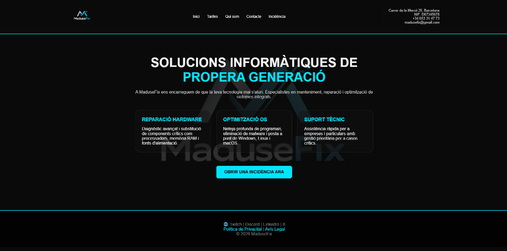

Altres Projectes
A més de les pràctiques acadèmiques obligatòries, he desenvolupat projectes addicionals per seguir millorant les meves competències en el disseny i desenvolupament web.
Formulari d'Incidències - MaduseFix
Es tracta d'una pàgina web interactiva dissenyada per a la gestió de suport informàtic, on els usuaris poden notificar incidències o sol·licitar reparacions de hardware, optimització de sistemes operatius i suport tècnic.
La interfície compta amb un disseny modern sobre fons fosc, estructurat per blocs de serveis i amb un botó d'acció destacat per iniciar el tràmit de la incidència de manera àgil i eficient.
